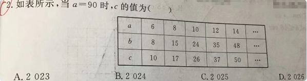

📷 点击查看原图
如表所示，当 时， 的值为（ ）
A. B. C. D.
| 知识点 | 说明 |
|---|---|
| 表格规律 | 观察 三行的对应关系，寻找统一公式 |
| 勾股数 | 满足 的正整数组称为勾股数 |
| 完全平方 | 是连接 与 的关键 |
| 代入求值 | 得到 关于 的表达式后，把 代入 |
逐行验证：
每一行都满足 ，所以 是一组勾股数。
观察 与 的对应值：
恒等于 ，即：
将 代入 ：
题1（表格二次规律·江西中考常见）：观察下表，当 时， 的值为 ______。📄 查看详细解答 →
💡 表格：；。
题2（勾股数规律）：一组勾股数中，偶数直角边 依次取 ，斜边 依次为 。若 ，则 ______。📄 查看详细解答 →
💡 提示：。
题3（表格二次规律）：根据表格求 时 的值。📄 查看详细解答 →
💡 表格：；。